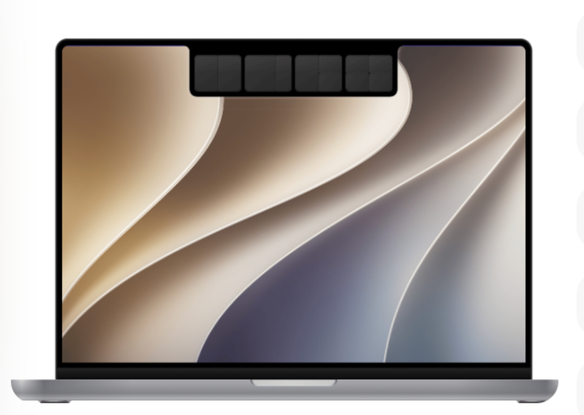

SuperIsland 窗口增强系统
可交互需求稿 v0.1 · HTML Gate · 不是业务实现
拖动窗口到岛上完成布局
用户拖动真实窗口靠近刘海，岛展开为布局投放区；放置后可撤销。
窗口中心 · 已就绪
Window Hub
把窗口排列、切换、Dock 和 Mission Control 统一到 SuperIsland 的原生交互体系。
窗口增强开启后由 SuperIsland 在后台响应拖窗、Dock 与快捷键操作

屏幕边缘分屏
悬浮分屏岛
摇动窗口
Dock 窗口预览
调度中心 Pro
Dock 窗口反转
Cmd-Tab Plus
调度中心 Pro
关闭窗口关闭当前选中的单个窗口
退出程序退出前二次确认，保护未保存内容
快捷功能
Dock 锁定屏幕
隐藏所有窗口
隐藏其他窗口
移动到下个显示器
移动到上个显示器
窗口居中
窗口布局
权限与降级
辅助功能用于读取窗口位置并执行移动、缩放和关闭
屏幕录制（可选）只用于本地窗口缩略图；拒绝后仍可基础分屏
本页仅确认 SuperIsland 设置结构与交互；正式系统权限、快捷键冲突和 Swift 落地需分别验收。
高级选项
预留台前调度空间
分屏窗口间距
强调色
排除 AppSuperIsland 会排除以下 App，不响应快捷键和分屏功能
关于
SuperIsland版本 0.1 · HTML 演示
确认操作
此操作需要确认。
操作完成
入口拖窗热区、快捷键、Dock、Mission Control、设置
反馈处理中、成功、失败、撤销、重试、确认
权限辅助功能必需；屏幕录制按缩略图功能单独申请
兼容多屏、竖屏、全屏转换（仅需求稿）、不可缩放窗口、无窗口
HTML 仅用于确认入口、流程、状态、反馈和边界；确认后才进入正式 PRD，PRD 确认后仍需单独授权进入 Swift 代码。